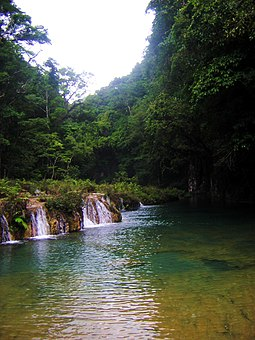

Semuc Champey
From Wikipedia, the free encyclopedia
Semuc Champey (Where the river hides under the stones) is a natural monument in the department of Alta Verapaz, Guatemala, near the Q'eqchi' Maya town of Lanquín. It consists of a natural 300 m limestone bridge, under which passes the Cahabón River. Atop the bridge is a series of stepped, turquoise pools, a popular swimming attraction. Although it can be difficult to get to, Semuc is becoming more and more popular with travelers.[1]
References
1. Joice Maynard (14 September 2012). "In Guatemala, a Torturous Drive to a Remote Eden". The New York Times. Retrieved 16 September 2012.
External Links
- Taking a Tour to Semuc Champey
- Semuc Champey Photos, Videos and Overview
This Guatemala location article is a stub. You can help wikipedia by expanding it.
This article related to a protected area in North America is a stub You can help Wikipedia by expanding it
